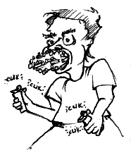

I know you've probably heard the phrase, "guns don't kill people, people kill people" reiterated in various tones of sincerity or sarcasm. Which, granted has a ring of truth to it, much like that ring you hear when someone hits you in the ear, but mur-der is a hell of a lot more taxing when you have to chase your victim down with a noose. I remember listening to some guy telling me about the good old days... "You know back when I was young, people were different. If you got into a fight with some one you didn't pull out a gun and shoot them. You did the manly thing. You met after school with boxing gloves and matched blow for blow..." until apparently one or the other of your noses no longer was positioned on the correct side of your head.
After listening to that, I kind of decided that these days aren't so different, only the toys are different. The people are just the same, they just use what ever is handi-est. But what if the people were different? What if they didn't use the easiest means to an end? Just think of how much more interesting things like armed robbery would be. Armed with what you ask? Armed with anything and everything.
"Everybody freeze! I've just rigged up a ton of asbestos into the ventilation sys-tem and if anyone makes any false moves I'm gonna release it."
How about Camel's revenge? "Ok, everyone down on the floor! I've got a carton of cigarettes and I'm not afraid to use them." Or if you have to sit down and explain the situation to your dumb founded hostages, you could try, "Listen, I've a pack of ciga-rettes, a lighter, and if I don't get $2000 into this bag in a big hurry, I'm going to start blowing carcinogens in your faces." (This approach could however just encourage a large crowd of chain smokers to flock to your side in silent anticipation.) The end result itself is not as instantaneous as a bullet, but it will wheedle it's way in in another fifty years.
Just try entering a convenience store with a small wad of tinfoil, "Give me all of your money or you'll wish that you'd taken better care of your teeth." Fortunately it is very unlikely that some one working in a convenience store would have perfect oral hygiene anyway.
Can you imagine trying to hold up a place with and dirty old sock and a bottle of chloroform? Then again, it's hard to strike fear into the hearts of steely eyed man with a hold up line like, "Everyone shut the hell up! This is a robbery. If everyone cooperates, no one goes to sleep!"
Hell, if you're going to do something, do it so wrong that people can't help but mumble, "What the hell?" Walk into a bank with a jar of petroleum jelly and shout, "Everyone down on the floor or someone is going to get lubricated!"
So the next time your planning on venturing into the exciting world of high pow-ered explosives and firearms to retrieve a little petty cash... stop. Sit down and ask yourself (or us. we'd be glad to council you) "what would MacGyver do." or even, "How would mission impossible do it?" The point is that if your going to do it, you have to make it as convoluted and unnecessary as possible (theme music helps. Just carry around a tape player with assorted tapes of "action sequence" music. Make sure you have the "CHIPS Car Chase" music. You know the kind. Lots of chicka-bow-wow sounds in it?) You could even watch old re-runs on USA. Do your research thoroughly and plan ahead. And be sure to bring plenty of extra rubber bands.
It's your crime, so have fun with it.
Oh, and if you do get caught, and the words, "Freeze! Federal Agent!" grace your ears...please stop. It would make Mulder and Scully feel better. |

|